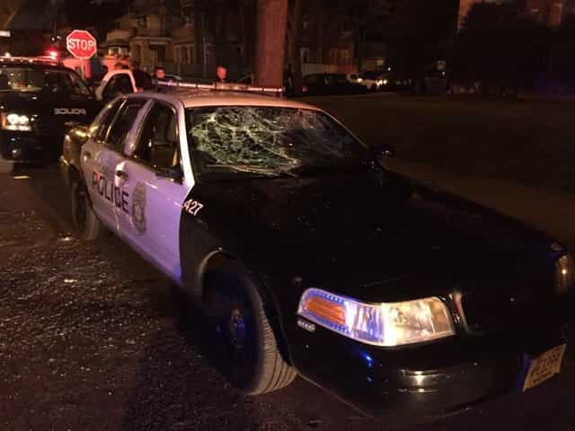

This account syndicates news from other media outlets.


Late on Saturday afternoon police in Milwaukee, Wisconsin shot an armed suspect fleeing from a car on the city’s North Side. Not long after the shooting a large group of residents initiated a confrontation with police that included at least one squad car being burned. A gas station and other autos were also torched.
#BlackLivesMatter rioters target whites: "They beating up all the white people." #Milwaukee pic.twitter.com/G85jnYtd3k
— Paul Joseph Watson (@PrisonPlanet) August 14, 2016
The officer-involved shooting occurred at around 3:30 PM and involved two MPD officers who had stopped a car near the 3200 block of N. 44th Street. The two suspects inside fled on foot with the officers giving chase. In short order one of the suspects pointed a semi-automatic pistol at the officers and was killed, according to CBS.
In the hours after the shooting groups of residents in the mostly African-American neighborhood gathered near the crime scene and soon began taunting police officers investigating the incident.

The taunting continued for some time and then turned violent, with police cars being swarmed and pelted with bricks and rocks as a small-scale riot broke out.
Some 100 protesters engaged in a standoff with police, some of whom had responded in riot gear. As the riot grew in intensity cop cars were stoned and one set aflame.
The conflagration grew from there with other cars being set on fire. A local gas station also became engulfed in flames.
The MPD said that someone in the crowd began firing shots, perhaps in the air, according to the Milwaukee Sentinel. There have yet to be reports of anyone being hit by gunfire.
VIDEO: Rioters chanting "black power" as gas station burns in #milwaukee pic.twitter.com/wQJ45WOocm
— Tim Pool (@Timcast) August 14, 2016

Police also reported on Twitter that Milwaukee fire fighters were kept from extinguishing the flames because shots were being fired by some of the rioters.
Gas station at Sherman and Burleigh set on fire. MFD cannot extinguish fire as gunshots are being fired.
— Milwaukee Police (@MilwaukeePolice) August 14, 2016
Officials added that thus far one officer was injured by a brick thrown through the windshield of his squad car.
MPD officer undergoing treatment at local hospital after brick thrown through squad window, striking officer in the head.
— Milwaukee Police (@MilwaukeePolice) August 14, 2016
Milwaukee Police Assistant Chief Bill Jessup told the media on Saturday evening that the 23-year-old man shot earlier in the day had a lengthy police record.